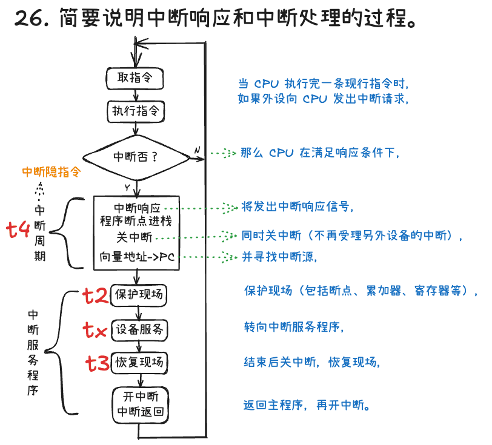

第8章：输入输出系统
参考讲义
课堂配套课件下载：第8章 输入输出系统 PPT
输入输出系统（I/O System）负责协调超高速 CPU/主存与种类繁杂的低速外围设备之间可靠、高效地交换信息。本章围绕四大 I/O 控制方式（程序查询、程序中断、DMA、通道）、I/O 接口内部结构与端口编址、I/O 软件分层以及系统性能瓶颈优化四大主线展开，是 408 统考综合大题的常客。
8.1 I/O 系统概述与“I/O 墙”瓶颈
8.1.1 I/O 系统的三大组成部分
-
🖨️ 1. I/O 设备（外部物理端）
泛指第 7 章介绍的各类输入设备（键鼠、扫描仪）、输出设备（显示器、打印机）及外存（HDD、SSD），负责信息采集、结果呈现与大容量持久化存储。
-
🔌 2. I/O 接口（硬件控制器 / 适配器）
介于系统总线与外设电缆之间的专用硬件电路。
翻译官类比（仅帮助理解）：CPU 讲的是高速统一的二进制总线语言，外设讲的是五花八门的模拟/机电/串行语言，I/O 接口就是实时双向翻译加缓冲驿站——负责速度匹配、串并格式与电平转换、地址译码和状态汇报。
-
💿 3. I/O 软件（管理与驱动层）
驻留在操作系统内核与运行时库中的控制程序（包括中断处理程序、设备驱动程序、与设备无关的管理及缓冲软件），向上层应用屏蔽繁琐的底层硬件寄存器细节。
8.1.2 I/O 设备的四大显著矛盾与 Amdahl 定律警示
- 速度鸿沟悬殊：CPU 时钟在 \(\text{GHz}\)（亚纳秒）级，DRAM 主存在数十纳秒级，而机械磁盘等外设在毫秒（\(\text{ms}\)）级——读一个扇区的 \(10\text{ ms}\) 内，CPU 足以执行数千万条指令！
- 数据格式各异：键盘发扫描码、显卡吃像素矩阵、声卡要脉冲编码流，必须经接口标准化转换。
- 控制种类繁杂：单台计算机同时挂载数十种工作原理、位宽与速率截然不同的外设。
- 物理可靠性较低：外设往往含机械运动部件或暴露于外部环境，掉线、校验错、缺纸等异常频发。
“内存墙 / I/O 墙”与 Amdahl 定律的铁律
I/O 系统通常是制约整机实际体验的头号短板。根据第 1 章的 Amdahl 定律，哪怕把 CPU 算力提升到无穷快，只要任务中有相当比例的时间卡在磁盘读写或网络等待上，整机加速比就会被慢速 I/O 死死封顶！因此，如何把 CPU 从漫长的 I/O 等待中解放出来，正是下面四种控制方式一路演进的原动力。
8.2 四种 I/O 控制方式（408 核心必考）
为了解决“高速 CPU 怎样跟慢速外设打交道最划算”的问题，计算机体系结构演化出了四代控制方式：
四代 I/O 控制方式的直观生活类比（仅帮助理解，不可替代硬件机制）
- ① 程序直接控制（轮询）：你去银行办业务却没有叫号机，只能站在窗口每隔 5 秒问柜员一句“轮到我了吗？”——期间你什么别的事也干不了（CPU \(100\%\) 死等空转）。
- ② 程序中断方式：装上了手机来电提醒——你专心写代码，只有快递员到楼下打响电话（中断请求）时才暂停工作下楼取件，取完回来接着写（CPU 与外设并行，按字/字节通知）。
- ③ DMA（直接内存访问）：要搬一整屋子书，每搬一本书都打电话叫你下楼（按字节中断）还是会把你累趴下；于是你雇了专业搬家公司（DMA 控制器），只交代一句“把书房 50 箱书搬到新家客厅”，搬家公司自己一趟趟直接往返主存，整车全部搬完后再打一个电话让你验收！
- ④ 通道方式：你配了一位全能行政秘书（I/O 通道处理器），直接丢给秘书一份写满多步复杂流程的任务清单（通道程序），秘书自己统筹联系多家物流、核对清点，全部办妥后只向你汇报最终结果。
先看数据通路：通知 CPU 与搬运数据是两件事
以设备向主存输入数据为例。中断解决“何时通知 CPU”；DMA 进一步改变“数据怎样到主存”。下面只画经典教材模型，不表示所有现代 I/O 实现的全部细节。
flowchart TD
A[设备准备数据] -->|发出中断请求| B[CPU 执行中断服务程序]
B --> C[CPU 读取接口数据寄存器]
C --> D[CPU 把数据写入主存]
D --> E[恢复并继续原程序]就绪前 CPU 可以执行其他任务；响应后，数据经 CPU 寄存器进入主存。它减少忙等，但没有把搬运工作交给 DMA 控制器。
flowchart TD
A[CPU 配置地址、长度、方向] --> B[DMA 控制器组织总线传送]
B --> C[设备数据直接写入主存]
C --> D{块传送完成吗}
D -->|否| B
D -->|是| E[通知 CPU 做完成处理]数据不必逐字经 CPU 寄存器中转，但 CPU 仍负责启动、完成处理等工作；DMA 与 CPU 还可能争用访存资源。“不逐字搬运”不等于“CPU 完全不参与”或“从不暂停访存”。
8.2.1 程序直接控制方式（Programmed I/O）
最原始的控制方式，完全由用户/内核程序中的指令显式驱动数据传输，细分为两类：
- 无条件传送：假定外设每时每刻都处于就绪状态（如拨码开关、数码管、LED 指示灯），CPU 直接读写数据端口即可。
- 程序查询（Polling / 条件传送）：CPU 在循环里反复读取接口的状态寄存器，死盯“就绪位（Ready）”，直到外设备妥一个字才读写数据寄存器：
poll_loop:
读取键盘接口 [状态寄存器]
测试 Ready 标志位是否为 1（有按键数据？）
若 Ready == 0 --> 跳回 poll_loop 继续原地轮询（CPU 忙等空转！）
若 Ready == 1 --> 读取 [数据寄存器] 取走字符，结束本次 I/O
- 评价：硬件极其简单、零额外控制器成本；但 CPU 与外设彻底串行绑定，轮询忙等把宝贵算力浪费在无用功上，仅适合单片机控制简单低速传感器或系统刚上电的自检阶段。
8.2.2 程序中断方式（Interrupt-Driven I/O · 对应教材图 8-1）
1. 核心机制与中断响应时机
外设受命启动后自己慢慢准备数据，CPU 掉头去执行其他用户主程序；一旦外设准备就绪（或发生故障），立刻拉高中断请求线（INTR）主动呼叫 CPU。
关键细节：为保证主程序指令执行的原子性，CPU 一律在当前指令执行周期的最后一个时钟拍结束时统一采样检查中断请求线！若存在未屏蔽请求且当前处于开中断（
IF = 1）状态，CPU 下一个周期便转入中断响应周期。
2. 一次完整中断响应与服务全流程（复原图 8-1 · 硬件隐指令 vs 软件 ISR）
考研真题极爱追问“哪几步由硬件自动完成、哪几步由中断服务程序软件完成”——看清下面这张流程全图即可一锤定音：
flowchart TB
DEV["1. 外设准备就绪，发出中断请求信号"] --> CHK["2. CPU 在当前指令执行结束时采样中断<br/>判优且开中断允许响应"]
subgraph HW["硬件自动执行：中断隐指令（对应中断周期 t₄）"]
direction LR
H1["① 关中断<br/>(防现场保存途中被打断)"] --> H2["② 保存断点<br/>(原 PC / PSW 压栈或存特定单元)"] --> H3["③ 引出中断服务程序入口<br/>(硬件向量法 / 软件查询法装入新 PC)"]
end
subgraph SW["软件执行：中断服务程序 ISR"]
direction TB
S1["④ 保护现场与旧屏蔽字<br/>(通用寄存器及屏蔽字压栈 · 耗时 t₂)"]
S2["⑤ 开中断（多重中断系统）<br/>允许更高级别中断抢占嵌套"]
S3["⑥ 执行设备中断服务主体<br/>(真正读写 I/O 端口数据 · 耗时 t_设备)"]
S4["⑦ 关中断<br/>(保护恢复现场过程不被打断)"]
S5["⑧ 恢复现场与旧屏蔽字<br/>(通用寄存器及屏蔽字出栈 · 耗时 t₃)"]
S6["⑨ 开中断 + 中断返回指令 (IRET)<br/>弹出原断点 PC，回到主程序继续执行"]
S1 --> S2 --> S3 --> S4 --> S5 --> S6
end
CHK --> HW --> SW3. 多重中断嵌套与两类优先级
- 单重中断 vs 多重中断（中断嵌套）：单重中断在整个 ISR 执行完返回前一直保持关中断，谁也不能打断；多重中断在保护完现场和屏蔽字后提前“开中断”，允许级别更高的紧急中断打断当前低优先级 ISR 优先执行。
- 硬件响应优先级 vs 软件处理优先级（作业
P290-8核心理论）： - 响应优先级：由硬件排队器线路固定决定，解决“同一时刻多个外设同时发请求，CPU 先受理谁”；
- 处理优先级：通过各中断服务程序在开头动态改写中断屏蔽字寄存器（Mask）来设定，解决“我已经进来了，允许谁中途插队打断我（
0允许 /1屏蔽）”——无需改动一根硬件连线即可灵活重排嵌套次序！ - 评价：实现了 CPU 与外设并行工作、实时响应好，至今仍是键盘、鼠标及各类控制事件通知的基石；但每传一个字/字节都要走一遍“中断请求 \(\rightarrow\) 保护现场 \(\rightarrow\) 恢复现场”，用于高速磁盘块读写时开销依然不可接受。
8.2.3 DMA 方式（Direct Memory Access，直接存储器访问）
1. DMA 控制器的七步批量直传流程
在主存与高速外设之间架设专用的 DMA 控制器（DMAC，具备主设备能力），绕开 CPU 直接开辟“外设 \(\leftrightarrow\) 主存”数据高速路：
- CPU 预处理（启动初始化）：CPU 执行几条指令向 DMAC 写入主存起始地址（AR）、传送字数计数器（WC）、设备地址及读写方向，随后转身继续执行其他程序；
- 外设发 DMA 请求：外设准备好一个字/字节到接口缓冲后，向 DMAC 发
DREQ； - DMAC 申请总线：DMAC 向 CPU 发出总线保持/周期挪用请求（
HOLD/BR）； - CPU 让出总线控制权：CPU 在当前总线周期（存取周期）结束即可响应（注意：比中断响应更快！无需等整条指令执行完），回送
HLDA/BG释放三态总线； - 硬件直传一拍数据：DMAC 接管地址、数据与读写控制线，驱动数据在主存与外设间直接完成一次读写；
- 内部寄存器自动更新：DMAC 硬件自动将主存地址寄存器 \(+1\)、字计数器 \(-1\)；若计数器未归零则释放总线，回第 2 步继续传下一个字；
- 后处理（块结束中断）：当一整块数据全部传完（计数器溢出归零），DMAC 向 CPU 发一次“DMA 结束中断”，CPU 仅在此刻短暂介入做校验收尾。
2. DMA 与 CPU 共享访存总线的三种传送方式
当 DMAC 与 CPU 同时需要访问主存时，按总线让渡粒度分为三种策略：
| DMA 访存方式 | 核心机制 | 优点 | 缺点与适用场景 |
|---|---|---|---|
| 1. 停止 CPU 访存（独占突发式） | 一旦开始传数据块，DMAC 一口气独占主存总线直到整块传完，期间 CPU 涉及访存的操作被迫挂起（仅能靠片内 Cache 跑少量指令） | 控制简单，适合超高速成批紧迫数据块 | 整块传输期间 CPU 较长时间拿不到内存，局部闲置 |
| 2. 周期挪用（Cycle Stealing，最常考） | 外设每凑齐一个字，DMAC 才临时“借用 / 窃取”一个主存存取周期传完即还；可能遇到三种情形： • CPU 此时本就不访存（零冲突） • CPU 正在访存（DMAC 等当前存取周期结束再挪用） • 双方同拍请求访存 \(\rightarrow\) DMAC 优先权高于 CPU！（因高速外设不及时取走数据会发生数据丢失覆盖） |
兼顾 CPU 高效执行与 I/O 及时响应，是最经典的折中方案 | 每传一字都要申请/归还一次总线周期 |
| 3. DMA 与 CPU 交替访存 | 主存工作速度远快于 CPU 时，将一个 CPU 周期硬性等分为 \(C_1\)（专供 DMAC 访存）和 \(C_2\)（专供 CPU 访存）两个分时槽 | 完全无需申请/建立/归还总线握手，零冲突零等待，速率最高 | 硬件时序逻辑最复杂，要求主存周期明显短于 CPU 周期 |
8.2.4 通道方式与四种控制方式终极对比
I/O 通道（Channel）是一台精简的专用 I/O 处理器，拥有专属于自己的通道指令集。CPU 只需在主存里准备好由多条通道指令（指明读/写命令、主存首址、字节计数、下一条特征位）串成的通道程序，发一条“启动 I/O”指令告知通道即可撒手不管；通道自行从主存逐条取通道指令控制多台控制器与海量外设（完成后发一次通道中断）。
- 三类通道结构：字节多路通道（分时交叉连接大量低速字符设备）、选择通道（一段时间内独占服务一台高速磁盘直到传完）、数组多路通道（按数据块分时交叉服务多台高速设备，兼顾高带宽与高并发，大型主机主力）。
- DMA vs 通道核心分野：DMA 靠固定硬件计数器只能执行单一设备、单一连续主存块的死板搬运；而通道靠执行主存中的通道程序，能独立管理多台不同外设、离散主存区域及复杂条件跳转分支。
四种 I/O 控制方式全景对比表（408 高频简答与选择核对表）
| 对比维度 | 程序查询（轮询） | 程序中断 | DMA 方式 | 通道方式 |
|---|---|---|---|---|
| 数据传送通路 | 外设 \(\leftrightarrow\) CPU \(\leftrightarrow\) 主存 | 外设 \(\leftrightarrow\) CPU \(\leftrightarrow\) 主存 | 外设 \(\leftrightarrow\) 主存（绕开 CPU） | 外设 \(\leftrightarrow\) 主存（绕开 CPU） |
| 单次干预粒度 | 按 字 / 字节 死盯 | 按 字 / 字节 发中断 | 按 单个连续数据块 | 按 通道程序（多块 / 多设备组） |
| CPU 介入时机 | 全程 \(100\%\) 忙等参与 | 每传完 1 个字/字节 进一次 ISR 搬数 | 仅在数据块传输开始（预处理）和结束（后处理中断）时参与 | 仅在整套 I/O 任务启动通道与最终完成中断时参与 |
| CPU 与外设并行度 | 完全串行（无并行） | 并行（按字打断） | 高度并行（仅挪用少量总线周期） | 最高度并行（大型机级彻底解耦） |
| 异常事件处理能力 | 程序自行判断 | 能直接执行软件处理复杂故障异常 | 仅负责纯数据搬运，遇故障仍需发中断请 CPU 处理 | 可由通道程序自检并上报状态字 |
| 硬件成本与适用场景 | 最低；极简低速开关/传感器 | 中等；键鼠、串口及全系统异常通知 | 较高；现代 PC 磁盘（NVMe/SATA）、高速网卡主力 | 最高；IBM 大型主机与超算海量存储系统 |
8.3 I/O 接口结构与端口编址
8.3.1 I/O 接口的六大职责与内部通用结构
- 设备寻址选择：地址译码器比对地址总线信号，确认 CPU 当前点名的是不是本接口内部端口。
- 数据缓冲匹配：内置数据缓冲寄存器（DBR）或小型 FIFO 队列，削平高速总线与慢速外设的速度落差。
- 信号与格式转换：完成并行 \(\leftrightarrow\) 串行转换、TTL/CMOS 与外部差分电平转换及 \(8\text{ bit} \leftrightarrow 32/64\text{ bit}\) 位宽拼拆。
- 设备状态监视：通过状态寄存器记录
Busy（忙）、Ready（就绪）、Error（故障）标志供 CPU 读取。 - 控制命令锁存与定时：通过控制寄存器接收 CPU 下发的工作模式字并向外设发出启动/复位定时脉冲。
- 中断与 DMA 握手逻辑：管理中断允许/屏蔽触发器，向 CPU/DMAC 递交请求信号。
flowchart LR
subgraph CPU_SIDE["系统总线侧"]
DB["数据总线 DB"]
AB["地址总线 AB"]
CB["控制总线 CB"]
end
subgraph IFACE["I/O 接口（内部可寻址端口）"]
DBR["数据缓冲寄存器<br/>(DBR / FIFO)"]
SR["状态寄存器<br/>(Busy / Ready / Err)"]
CR["控制寄存器<br/>(命令字 / 模式)"]
DEC["地址译码与片选逻辑"]
CTL["接口控制与中断/DMA逻辑"]
end
subgraph DEV_SIDE["外围设备侧"]
DEV["物理 I/O 设备<br/>(机电控制与传感介质)"]
end
DB <-->|"读/写数据"| DBR
DB -->|"写控制字"| CR
SR -->|"读状态字"| DB
AB -->|"端口地址"| DEC --> CTL
CB <-->|"读写命令 / INTR / DREQ"| CTL
CTL --- DBR & SR & CR
DBR <-->|"外设数据线"| DEV
DEV -->|"状态线"| SR
CR -->|"控制线"| DEV易混术语辨析：接口内部那几个能被 CPU 用地址直接点名读写的寄存器（数据口、状态口、控制口）称为 I/O 端口（Port）；而把若干个 I/O 端口加上地址译码、控制逻辑封装在一起的整块硬件电路才叫 I/O 接口（Interface）！
8.3.2 I/O 端口的两种编址方式对比（高频考点）
CPU 究竟把接口里的“端口寄存器”当成普通内存单元看，还是单独拎出来编号？
| 对比维度 | 统一编址（存储器映射 I/O，MMIO） | 独立编址（专设 I/O 映射，Port-Mapped I/O） |
|---|---|---|
| 地址空间划分 | 将 I/O 端口与主存单元混编在同一个物理地址空间中（划出一段特定内存地址区间分给外设寄存器） | I/O 端口拥有完全独立于主存之外的专属 I/O 地址空间（需单独的控制线如 \(\text{M}/\overline{\text{IO}}\) 区分当前地址是找内存还是找外设） |
| 访问所用指令 | 无需专用 I/O 指令——直接复用全部访存指令（如 LW / SW、MOV） |
必须使用专门的 I/O 指令（如 x86 经典的 IN / OUT 指令） |
| 核心优势 | 指令类型与寻址方式极其丰富灵活，可直接对端口做算术逻辑操作，软硬件译码统一简洁 | 不挤占宝贵的主存地址空间；I/O 端口地址位数短，地址译码更快；汇编代码中 IN/OUT 一眼就能识别出外设操作 |
| 主要短板 | 占用一部分主存物理地址空间（注意 I/O 映射区必须设为不可被 Cache 缓存，否则读不到最新实时外设状态！） | 专用 I/O 指令功能单一、寻址模式少，CPU 控制引脚更复杂 |
| 典型架构代表 | MIPS、RISC-V、ARM 等几乎所有 RISC 架构（以及现代 x86 访问 PCIe 高速显存/网卡 BAR 空间也大量混用 MMIO） | 传统 x86 架构（拥有独立的 16 位 \(64\text{K}\) I/O 端口号空间） |
8.3.3 常见典型物理 I/O 接口速览
- 并行接口 vs 串行接口：早期打印机 LPT 并口与 IDE 排线一次并传多位但抗干扰差、线缆短；现代 RS-232 调试串口、SATA、USB、PCIe 全面转向高速串行传输。
- 主流高速外设与存储接口：SATA（点对点串行连接硬盘）、SCSI / SAS（企业级高可靠多设备服务器存储接口）、USB（通用热插拔即插即用外设中枢）、Thunderbolt（雷电接口）（单口融合 PCIe 数据通道与 DisplayPort 视频流，带宽高达 \(40\text{Gbps}+\)）。
8.4 I/O 软件五层体系结构
操作系统通过自顶向下严格分层的软件栈，把冰冷复杂的硬件端口包装成程序员一行 read() / printf() 就能轻松调用的抽象服务：
flowchart TB
L1["1. 用户层 I/O 软件<br/>(标准库函数 printf / scanf、SPOOLing 假脱机打印系统)"]
L2["2. 设备独立性软件（设备无关层）<br/>(统一系统调用接口、逻辑设备名→物理设备映射、互斥分配、单/双/循环缓冲与缓冲池)"]
L3["3. 设备驱动程序（Device Driver）<br/>(随即插即用 PnP 动态或静态加载；将抽象请求翻译为具体寄存器命令序列与 DMA 初始化)"]
L4["4. 中断处理程序<br/>(保存/恢复现场、读取接口状态、唤醒阻塞等待 I/O 的进程)"]
L5["5. 底层硬件（I/O 接口控制器 + 物理外围设备）"]
L1 <--> L2 <--> L3 <--> L4 <--> L5- 为什么必须强调“设备无关性（Device Independence）”？ 应用程序只需操作逻辑设备名或文件描述符（如
/dev/lp0或标准输出流），操作系统在底层悄悄完成物理绑定——即便把惠普激光打印机换成佳能网络打印机，只需更换底层设备驱动程序，上层所有业务软件一行代码都不用改！
8.5 I/O 系统性能评估、优化与全栈延迟图景
8.5.1 三大指标、四类优化与基准测试工具
-
📊 I/O 三大核心度量指标
- 吞吐量（Throughput / 带宽 / IOPS）：单位时间内完成的字节数（\(\text{MB/s, GB/s}\)）或随机读写次数（IOPS）。
- 响应时间（Response Time / 延迟）：从应用发出请求到拿到数据的端到端耗时（含队列排队等待 \(+\) 控制器寻址 \(+\) 实际传输）。
- 利用率（Utilization）：设备或通道处于繁忙工作状态的时间占比（注意排队论规律：利用率逼近 \(100\%\) 时排队等待延迟会呈指数级飙升！）。
-
🚀 软硬件协同优化与测试工具
- 四大优化利器：
- 多级缓存（Page Cache / 磁盘 DRAM 缓存）：吸收重复读并合并零碎写；
- 顺序预读（Read-ahead / Prefetching）：利用空间局部性提前把后续扇区拉入内存；
- 异步非阻塞 I/O（Async I/O, 如
io_uring）：发起请求后线程不挂起，可并发重叠计算与多路 I/O； - 应用层批处理：用缓冲流攒够一整块再刷盘，避免频繁单字节系统调用。
- 主流基准测试（Benchmarking）工具：Linux 服务器压测神器
fio、Windows 经典IOmeter与日常测盘工具CrystalDiskMark、文件系统基准IOzone。
8.5.2 计算机全栈存储与 I/O 访问延迟数量级（建立系统直觉）
理解为什么需要 Cache、DMA 和中断，最好的方式就是对各层硬件的真实物理延迟建立数量级直觉：
| 层次部件 | 典型访问延迟量级 | 典型容量规模 | 若把 L1 Cache 比作 1 秒钟（直观体感缩放） |
|---|---|---|---|
| L1 Cache | \(\sim 0.5 \sim 1\text{ ns}\)（亚纳秒） | 数十 \(\text{KB}\) | \(1\text{ 秒}\)（伸手拿桌上的水杯） |
| L2 / L3 Cache | \(\sim 3 \sim 15\text{ ns}\) | 数 \(\text{MB} \sim\) 数十 \(\text{MB}\) | \(5 \sim 20\text{ 秒}\)（起身去书架拿书） |
| DRAM 主存 | \(\sim 50 \sim 100\text{ ns}\) | 数十 \(\text{GB} \sim\) 数百 \(\text{GB}\) | 约 \(1.5\text{ 分钟}\)（下楼去便利店） |
| NVMe / SATA SSD | \(\sim 10 \sim 150\ \mu\text{s}\)（微秒级） | 数百 \(\text{GB} \sim\) 数 \(\text{TB}\) | 约 \(4\text{ 小时} \sim 2\text{ 天}\)（跨省快递） |
| 机械硬盘（HDD） | \(\sim 5 \sim 12\text{ ms}\)（毫秒级） | 数 \(\text{TB} \sim 20\text{TB}+\) | 整整 \(3 \sim 6\text{ 个月}\)！（跨洋海运货轮） |
本章小结
- I/O 控制方式的四级跃迁本质上是“用专用硬件复杂度换取 CPU 解放度”的过程：程序查询让 CPU 原地空转；程序中断利用“硬件隐指令（关中断·存断点·引入口）\(+\) 软件 ISR（存现场·开中断服务·关中断复现场·返回）”实现按字异步响应与多重嵌套；DMA 借用总线周期在主存与高速外设间直接成块搬运；通道则以独立 I/O 处理器形态登峰造极。
- I/O 接口与软件栈共同构筑了软硬件解耦桥梁：内部由数据、状态、控制三类端口寄存器与译码控制电路构成，支持统一编址（MMIO）与独立编址（
IN/OUT）两种寻址哲学；外部由五层 I/O 软件（用户层 \(\rightarrow\) 设备无关层 \(\rightarrow\) 驱动程序 \(\rightarrow\) 中断处理 \(\rightarrow\) 硬件）屏蔽物理差异并结合缓存、预读与异步机制榨干存储带宽。
作业题
作业 P290-7：多设备系统中断饱和时间计算
题目
在图 8.12 中，假定 CPU 取指并执行一条指令的时间为 \(t_1\)，保护现场需 \(t_2\)，恢复现场需 \(t_3\)，中断周期需 \(t_4\)，每个设备的设备服务时间为 \(t_{\text{A}}, t_{\text{B}}, \cdots, t_{\text{G}}\)。试计算只有设备 A，D，G 时的系统中断饱和时间。
查看答案与解析
解析：
中断饱和时间的本质是指：CPU 完全被中断服务程序以及中断开销所占满，没有任何空闲时间去执行主程序（即不能取指并执行主程序指令）的状态。
1. 单个设备的中断总开销

当一个设备发出中断请求并被响应后，CPU 为了处理这个中断，需要付出以下 4 项时间代价：
- 中断周期时间 \(t_4\)：硬件响应中断、暂停当前程序、压入 PC 和 PSW 等。
- 保护现场时间 \(t_2\)：软件（中断服务程序开头）保存通用寄存器的值。
- 设备服务时间 \(t_{\text{设备}}\)：CPU 真正为该设备执行 I/O 操作或处理数据的时间（如 \(t_{\text{A}}, t_{\text{D}}, t_{\text{G}}\)）。
- 恢复现场时间 \(t_3\)：软件（中断服务程序结尾）恢复通用寄存器的值。
因此，对于任意设备 \(X\)，CPU 处理它的一次中断所花费的总时间为：
2. 系统中断饱和时间的物理含义
在多设备中断系统中，饱和状态意味着：在某一段时间 \(T_{\text{饱和}}\) 内，设备 A、D、G 各自恰好发出并完成了一次中断处理，且这三个中断开销加起来刚好把 CPU 的时间全部占满，留给主程序取指执行的时间（\(t_1\)）变成了 \(0\)。
3. 公式推导与合并同类项
将设备 A、D、G 的中断处理总时间相加，即可得到系统中断饱和时间：
最终答案
只有设备 A、D、G 时的系统中断饱和时间为 \(3(t_2 + t_3 + t_4) + t_{\text{A}} + t_{\text{D}} + t_{\text{G}}\)。
作业 P290-8：五级中断屏蔽字设置与响应处理次序
题目
设某机有 5 级中断：\(L_0, L_1, L_2, L_3, L_4\)，其中断响应优先次序为：\(L_0\) 最高，\(L_1\) 次之，\(L_4\) 最低。现在要求将中断处理次序改为 \(L_1 \rightarrow L_3 \rightarrow L_0 \rightarrow L_4 \rightarrow L_2\)，试问：
1. 下表中各级中断处理程序的各中断级屏蔽值如何设置（每级对应一位，该位为“0”表示允许中断，该位为“1”表示中断屏蔽）？
2. 若这 5 级中断同时都发出中断请求，按更改后的次序画出进入各级中断处理程序的过程示意图。
| 中断处理程序 | \(L_0\) 级 | \(L_1\) 级 | \(L_2\) 级 | \(L_3\) 级 | \(L_4\) 级 |
|---|---|---|---|---|---|
| \(L_0\) 中断处理程序 | |||||
| \(L_1\) 中断处理程序 | |||||
| \(L_2\) 中断处理程序 | |||||
| \(L_3\) 中断处理程序 | |||||
| \(L_4\) 中断处理程序 |
内容待补充
这一节还没有整理完，后续继续补充。
课后自测思考题
复习自检清单（共 10 题，学完本章试着口述作答并勾选）
- 1. I/O 系统组成：I/O 系统由哪三大部分组成？I/O 接口在其中承担什么桥梁职责？
- 2. 控制方式横评：从数据通路、CPU 介入频率与适用设备三个维度，对比程序查询、中断、DMA 和通道方式。
- 3. 中断全流程：复述一次多重中断从外设请求到
IRET返回的完整步骤，区分哪些是硬件“中断隐指令”做的、哪些是软件 ISR 做的。 - 4. DMA 核心机制：DMA 控制器如何绕开 CPU 直传主存？“周期挪用”时若 CPU 与 DMA 同拍争用主存，谁优先？为什么？
- 5. 端口编址对比：统一编址（MMIO）与独立编址（
IN/OUT）有何本质区别？各自优缺点与代表指令集是什么？ - 6. 控制方式选型：为键盘、鼠标、NVMe 固态硬盘和万兆网卡分别挑选最匹配的 I/O 控制方式并说明理由。
- 7. 磁盘 I/O 耗时口算：某硬盘平均寻道时间 \(8\text{ ms}\)，平均旋转延迟 \(3\text{ ms}\)，读取 \(4\text{KB}\) 数据传输时间 \(0.1\text{ ms}\)，求单次随机读取 \(4\text{KB}\) 总耗时（核对：\(8 + 3 + 0.1 = 11.1\text{ ms}\)——可见机械盘超过 \(99\%\) 时间花在寻道与旋转定位上！）。
- 8. 软硬件性能优化：从硬件架构和操作系统/应用软件两个层面，列举至少四项提升 I/O 吞吐或降低延迟的技术。
- 9. 驱动与设备无关性：设备驱动程序在五层 I/O 软件栈中起什么作用？操作系统引入“设备无关性”有什么工程价值？
- 10. 前沿 I/O 趋势：思考 PCIe 5.0 NVMe、NVMe over Fabrics（NVMe-oF）与持久内存（PMEM）等高速技术为何促使内核从传统中断转向轮询/异步
io_uring？